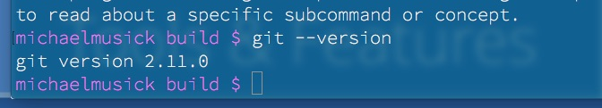
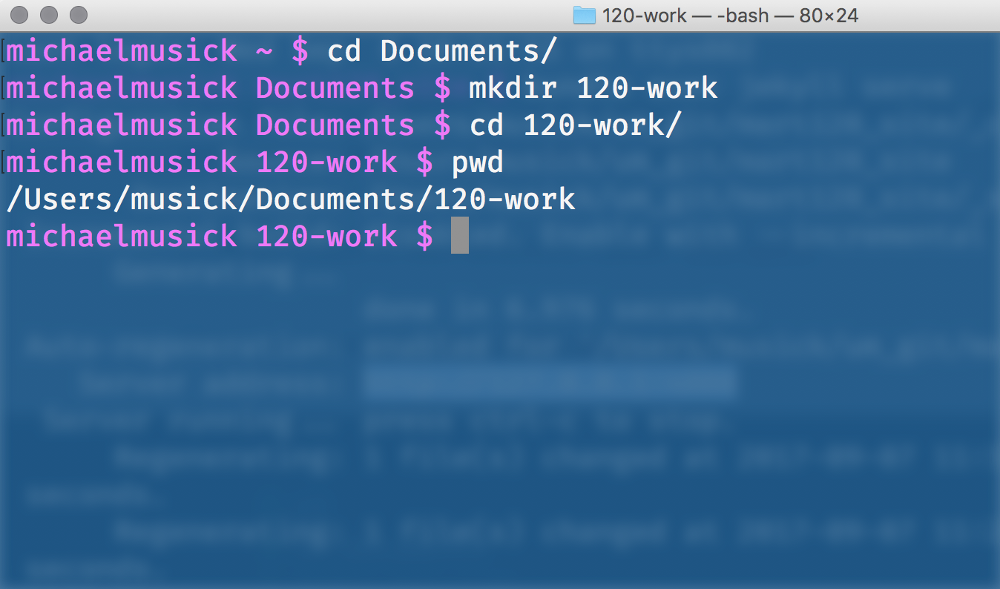
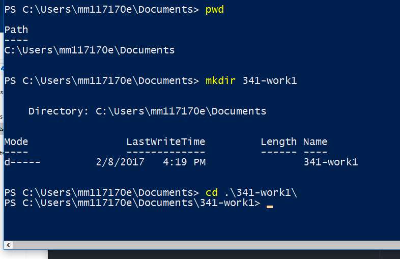

One great thing about working with text files is that their simplicity makes it easy to track changes between various versions of a file. Since the files contain only ASCII characters, it is easy to create programs that can look for character or word level changes to a document.
Please read sections 1.1-1.3 in the following online book about Git. Pro Git - TOC
Mac and Linux users likely have Git already installed on their machines. To check, open terminal.app and execute the following command
git --version

If you saw something like the above returned then you have git.
If you did not have git installed, want the latest version, or are on Windows then follow the install instructions from chapter 1.5 of the “Pro Git” book or the Atlassian Tutorial Site.
NOTE: Windows users:
Once Git is installed, open PowerShell / Terminal and run the above command (git --version). Everyone should now have git installed on their computer. If this did not work, shut down all command line applications (PowerShell, Command Line, Git Bash, Terminal, etc). Then reopen and try again.
After installing Git you should follow the instructions from chapter 1.6 of the Pro Git book on “First-Time Git Setup”.
The main thing to do is to set your username and email address. This is done with the following two lines of code in terminal or Command Line. (note: do not copy the ‘$’. This is a convention to show a new line in terminal/Command Prompt. Instead copy the rest of the line starting at the first character after the dollar sign. If a line does not start with a ‘$’, it is text output from the computer. Do not copy these lines.)
$ git config --global user.name "John Doe"
$ git config --global user.email johndoe@example.com
This section will refer to Chapter 2 in the Pro Git book. You need to read this chapter.
OK, lets learn some Git. Open terminal.app if you are on macOS/Linux or PowerShell.exe on Windows.
Navigate to a location on your system hard drive where you want to store all of your work for this course from this semester. I would suggest somewhere like your /Documents directory.
In there create a new directory called 120-work.
Then navigate into the /120-work directory.
$ cd
$ cd Documents
$ mkdir 120-work
$ cd 120-work

NOTE: Please change 341-work with 120-work. These are old images that need updating.

Make the new directory a Git repository.
The first thing your are going to do is tell Git to create a new repository within this directory. To do so, we will call the ‘git’ command followed by the ‘init’ command, hence git init. This will initialize a new repository.
$ git init
Initialized empty Git repository in /Users/musick/Documents/120-work/.git/
Add a file to the repository.
Move the test1.txt file we created earlier into the new directory. You can do this by grabbing it with your mouse and drag/drop-ing it to the new directory, or use the mv command in the terminal.
After moving the file to the directory, we need to tell the Git repository to “track” this file. To do this, we tell git to add all files to the repository git add *. (The * serves as a wildcard telling the terminal to find all files in the current directory.
$ git add *
Commit the changes to the repository.
The last step is to create a commit message to officially track these changes in the repository. To-do this we will call the git command again, followed by command commit. We will then pass in a “flag”, which tells a command to do something or to tell the command to expect additional data. In this case we will pass the -m flag which, in this case, stands for message. This tell git commit that the next bit of data is the “commit message”. The commit message serves to tell you, and any collaborators, what occurred in this commit, whether this is a significant milestone, etc. Git commit messages are placed within single quotes (I.e. '). So our first git commit command should look like;
$ git commit -m 'initial commit for the repository and test1.txt'
[master (root-commit) 14bc786] initial commit for the repository and test1.txt.
1 file changed, 7 insertions(+)
create mode 100644 test1.txt
Check the repository status.
Finally, lets check the status of our new repository with the command git status. This should tell us everything is as expected, tracked, and committed.
$ git status
On branch master
nothing to commit, working tree clean
One of the most powerful uses of Git, as previously mentioned, is its ability to track changes to files within your repository. Let’s take a look at how we can accomplish this.
Change the file and re-save it.
The first thing to do is open our test1.txt file in a Text Editor (Atom). Then make some changes, additions, or deletions. Finally re-save this file.
If we now check the status of our Git repo, it will tell us that the repository is no longer up-to-date.
$ git status
On branch master
Changes not staged for commit:
(use "git add <file>..." to update what will be committed)
(use "git checkout -- <file>..." to discard changes in working directory)
modified: test1.txt
no changes added to commit (use "git add" and/or "git commit -a")
Use git diff
Using the git diff command we can see how all files have changed since their last commit.
NOTE: this will not return any information on Windows.
$ git diff
diff --git a/test1.txt b/test1.txt
index 0b47a87..b4bb6ec 100644
--- a/test1.txt
+++ b/test1.txt
@@ -3,4 +3,6 @@ Date: 2017-09-07 11:31
This is my first text document for one of Dr. Musicks Media Arts courses.
-I added a new line to this file in my text editor!!!
+I added a new line to this file in my text editor, saved it, then changed it!!!
+
+HAHAHAHAHAHAH!!!!!
Lines that start with a ‘-‘ are “deletions” from the file, while lines that start with a “+” are additions to the file.
Stage the recently altered file with the add command.
After changing a file, we must tell Git that we want it to keep a snapshot of those changes. To do this, we tell git to “add” the changed file to its staged files.
$ git add *
If we check the status again, we will see that Git has staged the file, but not committed these changes yet.
$ git status
On branch master
Changes to be committed:
(use "git reset HEAD <file>..." to unstage)
modified: test1.txt
Finally, just as before, we commit all of our changes and add a commit message.
$ git commit -m 'made changes to test1.txt'
[master bcd8d98] made changes to test1.txt
1 file changed, 3 insertions(+), 1 deletion(-)
The last major thing you may want to do, is view the commit history of this Git Repo. To do this, we simply pass the command git log. This show us relevant information for each commit.
$ git log
commit bcd8d987427b4d61969b23c46275676c4c8f7688 (HEAD -> master)
Author: Michael Musick <michael@michaelmusick.com>
Date: Thu Sep 7 11:37:58 2017 -0600
made changes to test1.txt
commit 6aa336fe71c3afd8cccbd9c9ac69e77fc40e4667
Author: Michael Musick <michael@michaelmusick.com>
Date: Thu Sep 7 11:35:21 2017 -0600
test commit
commit 4b826a52d81ea448eedc221db58f6a0f0d571071
Author: Michael Musick <michael@michaelmusick.com>
Date: Thu Sep 7 11:29:33 2017 -0600
initial commit for the repository and test1.txt
Practice adding and changing files within your new Git repo. If you are having problems, return to the Pro-Git book.
Please watch the following videos to learn more about Git.
For additional resources check out the Git curated “External Links” page.